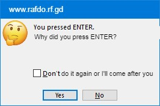

Uh huh! Dass right! You just unlocked a secret ImageQuest quest.
This is the image you got:
if you don't know what imagequest is, it's just a game where you do random things to get images. if you just want to play Guess The Word(s), and found that weird easter egg, then just go back to that game..